Curso:
1.
Primeros pasos |
2. Modelar con Java |
3. Pruebas automáticas |
4. Herencia |
5.
Lógica de negocio básica |
6.
Validación avanzada |
7.
Refinar el comportamiento predefinido |
8.
Comportamiento y lógica de negocio |
9.
Referencias y colecciones |
A.
Arquitectura y filosofía |
B.
Java Persistence API |
C.
Anotaciones
Lección 2: Modelar con Java
Ahora que tienes tu entorno configurado y sabes como desarrollar con él,
es hora de dar forma a tu proyecto. En esta lección, crearás todas las
entidades de tu proyecto y tendrás tu aplicación funcionando en un
santiamén.
Asumo que sabes crear una nueva entidad con Eclipse y como ejecutar la
aplicación, porque ya has leído la lección 1.
Modelo
básico del dominio
Primero crearemos las entidades para tu aplicación
Facturacion.
El modelo del dominio es más bien básico, pero suficiente para aprender
bastantes cosas interesantes:
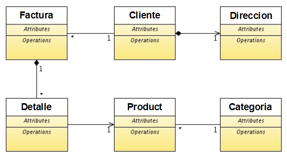
Empezaremos con seis clases, y más adelante añadiremos algunas más.
Recuerda que ya tienes una versión inicial de
Cliente y
Producto.
Referencia
(ManyToOne) como lista de descripciones (combo)
Empecemos con el caso más simple. Vamos a crear una entidad
Categoria
y asociarla a
Producto, visualizándola con un combo.
El código para la entidad
Categoria es:
package com.tuempresa.facturacion.modelo;
import javax.persistence.*;
import org.hibernate.annotations.GenericGenerator;
import org.openxava.annotations.*;
@Entity
public class Categoria {
@Id
@Hidden // La propiedad no se muestra al usuario. Es un identificador interno
@GeneratedValue(generator="system-uuid") // Identificador Universal Único (1)
@GenericGenerator(name="system-uuid", strategy = "uuid")
@Column(length=32)
private String oid;
@Column(length=50)
private String descripcion;
// RECUERDA GENERAR LOS GETTERS Y SETTERS PARA LOS CAMPOS
}
Sin duda, la entidad más simple
posible. Solo tiene un identificador y una propiedad
descripcion.
En este caso usamos el algoritmo Identificador Universal Único (1) para
generar el identificador. La ventaja de este generador de identificadores
es que puedes migrar tu aplicación a otras bases de datos (DB2, MySQL,
Oracle, Informix, etc) sin tocar tu código. Los otros generadores de
identificadores de JPA usan la base de datos para generar el
identificador, por lo que no son tan portables como UUID.
Aunque no hayamos incluidos los
getters y
setters en
el código de arriba, los getters y los setters tienen que incluirse
obligatoriamente en el código. Por suerte Eclipse puede escribirlos por
nosotros. Primero escoge
Source > Generate Getters and Setters...
en el menú del Eclipse:

Después pulsa en
Select All y entonces en
OK para
tener los
getters y
setters en tu código:
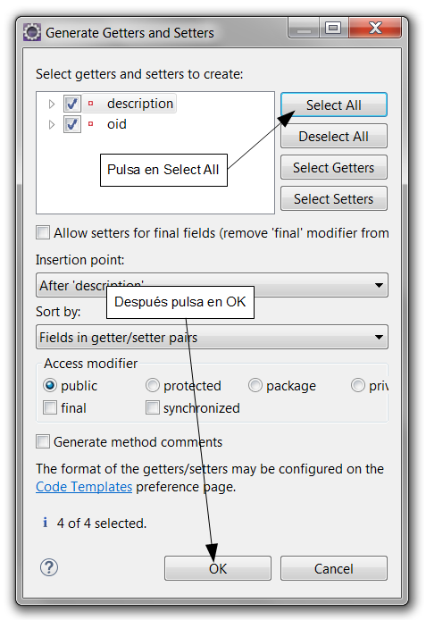
Recuerda hacer esto cada vez que crees una nueva entidad o añadas un nuevo
campo a una ya existente. Esta utilidad también está disponible con el
botón derecho sobre el código de la entidad o pulsando Ctrl-1 encima del
campo.
Ahora puedes ejecutar el módulo
Categoria y añadir algunas
categorías:
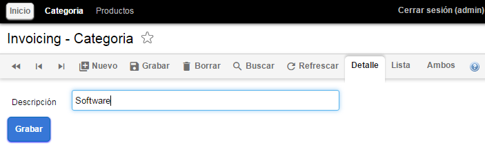
Ahora, asociaremos
Producto con
Categoria: Añade la
siguiente declaración para la referencia
categoria en tu entidad
Producto:
public class Producto {
...
@ManyToOne( // La referencia se almacena como una relación en la base de datos
fetch=FetchType.LAZY, // La referencia se carga bajo demanda
optional=true) // La referencia puede estar sin valor
@DescriptionsList // Así la referencia se visualiza usando un combo
private Categoria categoria; // Una referencia Java convencional
// RECUERDA GENERAR EL GETTER Y EL SETTER PARA categoria
}
Es una simple relación
muchos-a-uno de JPA, como se puede ver en el
apéndice
B. En este caso, gracias a la anotación
@DescriptionsList
se visualiza usando un combo:
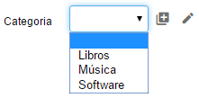
Ahora es el momento de completar la entidad
Producto.
Estereotipos
La entidad
Producto necesita tener al menos precio, además
estaría bien que tuviese fotos y un campo para observaciones. Vamos a usar
estereotipos para conseguirlo. Un estereotipo especifica un uso específico
de un tipo. Por ejemplo, puedes usar
String para almacenar
nombres, comentarios o identificadores, y puedes usar
BigDecimal
para almacenar porcentajes, dinero o cantidades. Es decir, hacemos
diferentes usos del mismo tipo. Los estereotipo son justo para marcar este
uso específico.
La mejor forma de entender que es un estereotipo es verlo en acción.
Añadamos las propiedades
precio,
foto,
masFotos
y
observaciones a tu entidad
Producto:
@Stereotype("DINERO") // La propiedad precio se usa para almacenar dinero
private BigDecimal precio; // Incluye el import java.math.* BigDecimal se suele usar para dinero
@Stereotype("FOTO") // El usuario puede ver y cambiar una foto
@Column(length=16777216) // Este tamaño para poder guardar fotos grandes
private byte [] foto;
@Stereotype("GALERIA_IMAGENES") // Una galería de fotos completa está disponible
@Column(length=32) // La cadena de 32 de longitud es para almacenar la clave de la galería
private String masFotos;
@Stereotype("TEXTO_GRANDE") // Esto es para un texto grande, se usará un área de texto o equivalente
private String observaciones;
// RECUERDA GENERAR LOS GETTERS Y SETTERS PARA LOS CAMPOS
Fíjate en que has de añadir el
import
java.math.* para poder usar
BigDecimal. Eclipse te ayuda
a añadir imports, sólo has de posicionar el cursor al final del tipo, al
final de
BigDecimal en este caso, y pulsar Ctrl - barra
espaciadora.
Has visto como usar estereotipos, solo has de poner el nombre del
estereotipo y OpenXava hará un tratamiento especial. Si ejecutas el módulo
para
Producto ahora verás lo siguiente:
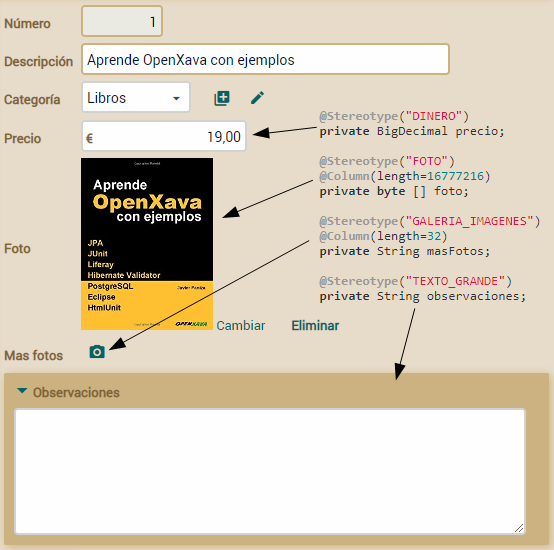
Como puedes ver, cada estereotipo produce un efecto en la interfaz de
usuario. Los estereotipos tienen efecto en los tamaños, validaciones,
editores, etc. Y te permiten reutilizar funcionalidad predefinida con
facilidad. Por ejemplo, sólo marcando una simple propiedad
String
con
@Stereotype(“IMAGES_GALLERY”) tendrás disponible toda una
galería de imágenes. Pulsando en la cámara de la propiedad
masFotos
verás la galería:
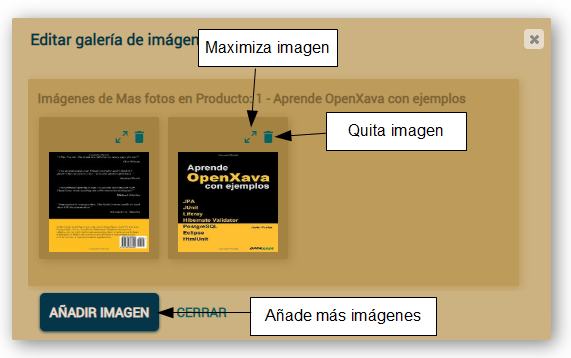
A parte de estos, OpenXava tiene muchos estereotipos predefinidos que te
pueden ser útiles, tales como ETIQUETA, ETIQUETA_NEGRITA, HORA, FECHAHORA,
RELLENADO_CON_CEROS, TEXTO_HTML, ETIQUETA_IMAGEN, EMAIL, TELEFONO, WEBURL,
IP, ISBN, TARJETA_CREDITO, LISTA_EMAIL, CONTRASENA, MAC, ARCHIVO,
ARCHIVOS, ICONO, etc.
Ya tienes
Producto listo. Refinemos ahora
Cliente.
Embeddable
Vamos a añadir una dirección a nuestro, hasta ahora algo desnudo,
Cliente.
La dirección del
Cliente no está compartida por otros objetos
Cliente,
y cuando un cliente se borra, su dirección es borrada también, por lo
tanto modelaremos el concepto de dirección como una clase incrustable.
Este se puede ver en el
apéndice
B sobre JPA.
Añade la clase
Direccion a tu proyecto:
package com.tuempresa.facturacion.modelo;
import javax.persistence.*;
@Embeddable // Usamos @Embeddable en vez de @Entity
public class Direccion {
@Column(length = 30) // Los miembros se anotan igual que en las entidades
private String viaPublica;
@Column(length = 5)
private int codigoPostal;
@Column(length = 20)
private String municipio;
@Column(length = 30)
private String provincia;
// RECUERDA GENERAR LOS GETTERS Y SETTERS PARA LOS CAMPOS
}
Como ves, es una clase normal y
corriente anotada como @Embeddable. Sus propiedades se anotan de
la misma manera que en las entidades, aunque las clases incrustables no
soportan toda la funcionalidad de las entidades.
Ahora, puedes usar Direccion en cualquier entidad. Simplemente
añade una referencia a ella en tu entidad Cliente:
public class Cliente {
...
@Embedded // Así para referenciar a una clase incrustable
private Direccion direccion; // Una referencia Java convencional
public Direccion getDireccion() {
if (direccion == null) direccion = new Direccion(); // Así nunca es nulo
return direccion;
}
public void setDireccion(Direccion direccion) {
this.direccion = direccion;
}
}
Los datos de Direccion
se almacenan en la misma tabla que los de Cliente. Y desde una
perspectiva de la interfaz de usuario hay un marco alrededor de Direccion,
aunque si no te gusta el marco sólo has de anotar la referencia con @NoFrame,
como muestra aquí:
@Embedded @NoFrame // Con @NoFrame no se muestra marco para direccion
private Direccion direccion;
Aquí se muestra la interfaz de
usuario para una referencia incrustada con y sin
@NoFrame:
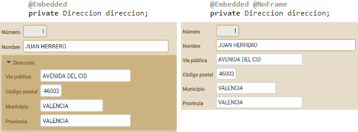
Ahora que tenemos las entidades básicas en marcha, es el momento de
enfrentarnos a la entidad principal de la aplicación:
Factura.
Empecemos poco a poco.
Clave
compuesta
No vamos a usar una clave compuesta para
Factura. Es mejor
evitar el uso de claves compuestas. Siempre tienes la opción de usar un
identificador oculto autogenerado. Aunque, algunas veces tienes la
necesidad de conectarte a bases de datos legadas o puede que el diseño del
esquema lo haya hecho alguien que le gustan las claves compuestas, y no
tengas otra opción que usar claves compuestas aunque no sea lo ideal. Por
lo tanto, vamos a aprender como usar una clave compuesta, aunque al final
cambiaremos a una clave simple autogenerada.
Empecemos con una versión sencilla de la entidad
Factura:
package com.tuempresa.facturacion.modelo;
import java.time.*;
import java.util.*;
import javax.persistence.*;
import org.openxava.annotations.*;
@Entity
@IdClass(FacturaKey.class) // La clase id contiene todas las propiedades clave (1)
public class Factura {
@Id // Aunque tenemos las clase id aún es necesario marcarlo como @Id (2)
@Column(length = 4)
private int anyo;
@Id // Aunque tenemos las clase id aún es necesario marcarlo como @Id (2)
@Column(length = 6)
private int numero;
@Required
private LocalDate fecha;
@Stereotype("MEMO")
private String observaciones;
// RECUERDA GENERAR LOS GETTERS Y SETTERS PARA LOS CAMPOS
}
Si quieres usar anyo y numero
como clave compuesta para Factura, una forma de hacerlo, es
marcándolos con @Id (2), y además tener una clase id (1). La
clase id tiene que tener anyo y numero como
propiedades. Puedes ver FacturaKey aquí:
package com.tuempresa.facturacion.modelo;
public class FacturaKey implements java.io.Serializable { // La clase key tiene que ser serializable
private int anyo; // Contiene las propiedades marcadas ...
private int numero; // ... como @Id en la entidad
public boolean equals(Object obj) { // Ha de definir el método equals
if (obj == null) return false;
return obj.toString().equals(this.toString());
}
public int hashCode() { // Ha de definir el método hashCode
return toString().hashCode();
}
public String toString() {
return "FacturaKey::" + anyo + ":" + numero;
}
// RECUERDA GENERAR LOS GETTERS Y SETTERS PARA anyo Y numero
}
En este código se ven algunos de
los requerimientos para una clase id, como el ser serializable e
implementar hashCode() y equals(). Eclipse puede
generartelos con Source > Generate hashCode() and equals()...
Has visto como usar una clave compuesta. Pero dado que tenemos control
sobre nuestro esquema, al final vamos a usar un identificador UUID para Factura.
Reescribe la entidad Factura para dejarla así:
package com.tuempresa.facturacion.modelo;
import java.time.*;
import java.util.*;
import javax.persistence.*;
import org.hibernate.annotations.GenericGenerator; // AÑADE ESTE IMPORT
import org.openxava.annotations.*;
@Entity
// @IdClass(FacturaKey.class) // QUITA LA ANOTACIÓN @IdClass
public class Factura {
// AÑADE LA PROPIEDAD oid
@Id
@GeneratedValue(generator="system-uuid")
@Hidden
@GenericGenerator(name="system-uuid", strategy="uuid")
@Column(length=32)
private String oid;
// RECUERDA GENERAR EL GETTER Y EL SETTER PARA oid
// @Id // QUITA LA ANOTACIÓN @Id
@Column(length=4)
private int anyo;
// @Id // QUITA LA ANOTACIÓN @Id
@Column(length=6)
private int numero;
...
}
También borra la clase
FacturaKey.
Usar una clave oculta autogenerada para
Factura tiene varios
beneficios prácticos sobre una clave compuesta: No has de escribir la
aburrida
FacturaKey, puedes modificar el número de factura sin
perder ninguna asociación con otros objetos y puedes almacenar en la misma
tabla pedidos y facturas con el par año/numero repetido.
El código que tienes es suficiente para hacer funcionar el módulo
Factura.
Hazlo y añade algunas facturas si quieres. Aunque todavía queda mucho
trabajo por hacer en
Factura, como asignar los valores por
defecto para
anyo,
numero y
fecha.
Calcular
valores por defecto
Si has probado el módulo
Factura, habrás visto que necesitas
teclear el año, el número y la fecha. Estaría bien tener valores por
defecto. Es fácil de hacer usando la anotación
@DefaultValueCalculator.
En el siguiente código ves como podemos añadir los valores por defecto
para
anyo y
fecha:
@Column(length=4)
@DefaultValueCalculator(CurrentYearCalculator.class) // Año actual
private int anyo;
@Required
@DefaultValueCalculator(CurrentLocalDateCalculator.class) // Fecha actual
private LocalDate fecha;
También has de añadir el siguiente
import en la parte de arriba de tu clase:
import org.openxava.calculators.*;
A partir de ahora cuando el
usuario pulse en el botón 'nuevo' el campo para año será el año actual, y
el campo para la fecha la fecha actual. Estos dos calculadores (
CurrentYearCalculator
y
CurrentLocalDateCalculator) están incluidos en OpenXava.
Explora el paquete
org.openxava.calculators para ver otros
calculadores predefinidos que pueden serte útiles.
Fíjate
que para la fecha usamos el tipo LocalDate (del paquete java.time).
Java tiene un tipo Date (en el paquete java.util). Sin
embargo Date no es una fecha, sino un momento en el tiempo,
incluyendo horas, segundo y milisegundos, mientras que LocalDate
tiene simplemente día, mes y año, es decir una fecha. Para el caso de la
factura, y para la mayoría en aplicaciones de gestión, usaremos LocalDate
en lugar de Date.
A veces necesitas tu propia lógica
para calcular el valor por defecto. Por ejemplo, para numero
queremos sumar uno al último número de factura dentro de este mismo año.
Crear tu propio calculador con tu lógica es fácil. Primero, crea un
paquete com.tuempresa.facturacion.calculadores para los
calculadores. Y crea en él una clase CalculadorSiguienteNumeroParaAnyo,
con el siguiente código:
package com.tuempresa.facturacion.calculadores;
import javax.persistence.*;
import org.openxava.calculators.*;
import org.openxava.jpa.*;
public class CalculadorSiguienteNumeroParaAnyo
implements ICalculator { // Un calculador tiene que implementar ICalculator
private int anyo; // Este valor se inyectará (usando su setter) antes de calcular
public Object calculate() throws Exception { // Hace el cálculo
Query query = XPersistence.getManager() // Una consulta JPA
.createQuery("select max(f.numero) from Factura f where f.anyo = :anyo"); // La consulta devuelve
// el número de factura máximo del año indicado
query.setParameter("anyo", anyo); // Ponemos el año inyectado como parámetro de la consulta
Integer ultimoNumero = (Integer) query.getSingleResult();
return ultimoNumero == null ? 1 : ultimoNumero + 1; // Devuelve el último número
// de factura del año + 1 o 1 si no hay último número
}
public int getAnyo() {
return anyo;
}
public void setAnyo(int anyo) {
this.anyo = anyo;
}
}
Tu calculador tiene que
implementar
ICalculator (y por lo tanto tener un método
calculate()).
Declaramos una propiedad
anyo para poner en ella el año del
cálculo. Para implementar la lógica usamos una consulta JPA. Repásate el
apéndice B sobre JPA. Ahora
sólo queda anotar la propiedad
numero en la entidad
Factura:
@Id @Column(length=6)
@DefaultValueCalculator(value=CalculadorSiguienteNumeroParaAnyo.class,
properties=@PropertyValue(name="anyo") // Para inyectar el valor de anyo de Factura
// en el calculador antes de llamar a calculate()
)
private int numero;
Recuerda añadir el import:
import com.tuempresa.facturacion.calculadores.*;
En este caso ves algo nuevo,
@PropertyValue.
Usándolo, estás diciendo que el valor de la propiedad
anyo en la
Factura actual se moverá a la propiedad
anyo del
calculador antes de hacer el cálculo. Ahora cuando el usuario pulse en
'nuevo' el siguiente número de factura disponible para este año estará en
el campo. La forma de calcular el número de factura no es la mejor para
muchos usuarios concurrentes añadiendo facturas. No te preocupes, lo
mejoraremos más adelante.
El efecto visual del calculador para valor por defecto es este:
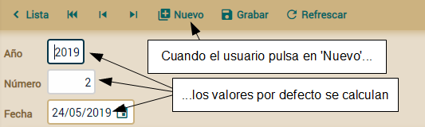
Los valores por defecto son solo los valores iniciales, el usuario los
puede cambiar si así lo desea.
Referencias
convencionales (ManyToOne)
Ahora que tenemos todas las propiedades atómicas listas para usar, es
tiempo de añadir relaciones con otras entidades. Empezaremos añadiendo una
referencia desde
Factura a
Cliente, porque una factura
sin cliente no parece demasiado útil. Antes de añadir el cliente
usa
el módulo Factura para borrar todas las facturas existentes,
porque vamos a hacer el cliente obligatorio y esto podría fallar con los
datos existentes.
Añade el siguiente código a la entidad
Factura:
@ManyToOne(fetch=FetchType.LAZY, optional=false) // El cliente es obligatorio
private Cliente cliente;
// RECUERDA GENERAR EL GETTER Y EL SETTER PARA cliente
No hace falta más. El módulo
Factura
es así:
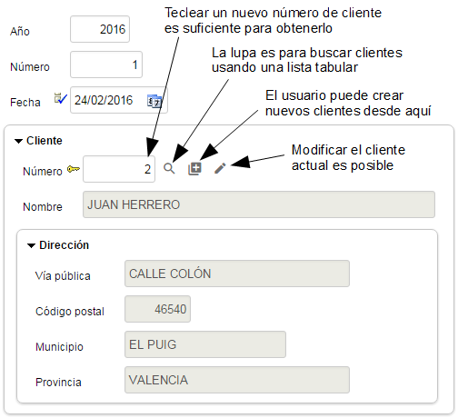
No hay más trabajo que hacer aquí. Añadamos una colección de líneas de
detalle a
Factura.
Colección
de objectos dependientes
Usualmente una factura necesita tener varias líneas con productos,
cantidades, etc. Estos detalles son parte de la factura, no son
compartidos por otras facturas y cuando una factura se borra sus líneas de
detalle son borradas con ella. Por tanto, la forma más natural de modelar
los detalles de una factura es usando objetos incrustados. Para hacerlo
con JPA declara una colección convencional y anótala con
@ElementCollection:
@ElementCollection
private Collection<Detalle> detalles;
// RECUERDA GENERAR EL GETTER Y SETTER PARA detalles
Usando
@ElementCollection cuando la factura se borra sus líneas se
borran también. Los detalles no se guardan en la base de datos hasta que
la factura se guarde y se guardan todos al mismo tiempo.
Para que esta colección funcione necesitas escribir la clase Detalle:
package com.tuempresa.facturacion.modelo;
import javax.persistence.*;
@Embeddable
public class Detalle {
private int cantidad;
@ManyToOne(fetch = FetchType.LAZY, optional = true)
private Producto producto;
// RECUERDA GENERAR LOS GETTERS Y SETTERS PARA LOS CAMPOS
}
Fíjate que está anotada con @Embeddable
no con @Entity, no puedes definir una @ElementCollection
de entidades. Esta clase incrustable puede contener propiedades y
referencias, pero no colecciones.
De momento solo tenemos cantidad y producto, pero es
suficiente para tener la Factura funcionando con detalles.
El usuario puede añadir, editar y borrar elementos de la colección como en
una hoja de cálculo:
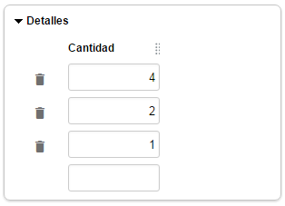
Este pantallazo enfatiza el hecho de que las propiedades a mostrar por
defecto son las propiedades planas, es decir, las propiedades de las
referencias no se incluyen por defecto. Esto produce una interfaz de
usuario fea para nuestra colección de líneas de factura en nuestro caso,
porque solo se muestra la propiedad cantidad. Puedes arreglarlo
usando @ListProperties, así:
@ElementCollection
@ListProperties("producto.numero, producto.descripcion, cantidad")
private Collection<Detalle> detalles;
Como
puedes ver, solo has de poner como valor para @ListProperties
la lista de la propiedades que quieres separadas por comas. Puedes usar
propiedades calificadas, es decir, usar la notación del punto para
acceder a las propiedades de referencias, tal como producto.numero
y producto.descripcion en este caso. El resultado visual es:
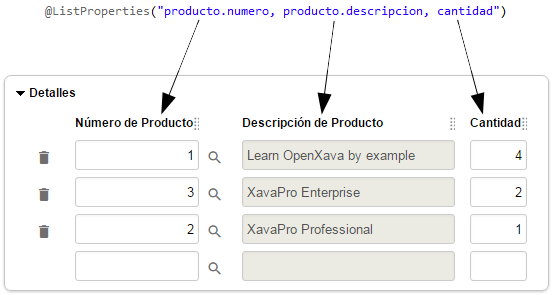
Refinar
la interfaz de usuario
¡Enhorabuena! Has finalizado tus
clases del modelo del dominio y tienes una aplicación funcionando. Tus
usuarios pueden trabajar con productos, categorías, clientes e incluso
crear facturas. En el caso de los productos, categorías y clientes la
interfaz de usuario está bastante bien, aunque para
Factura
todavía se puede mejorar un poco.
Ya has usado algunas anotaciones OpenXava para refinar la presentación,
como
@DescriptionsList,
@NoFrame y
@ListProperties.
En esta sección usaremos más anotaciones de este tipo para dar a la
interfaz de usuario de
Factura un mejor aspecto sin demasiado
esfuerzo.
Interfaz
de usuario por defecto
Así es la interfaz de usuario por defecto para
Factura:
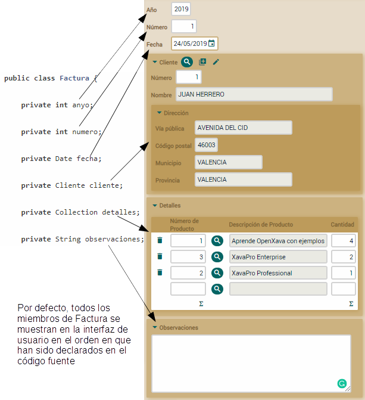
Como ves, OpenXava muestra todos los miembros, uno debajo de otro, en el
orden en que los has declarado en el código fuente. También ves como en el
caso de la referencia
cliente se usa la vista por defecto de
Cliente.
Vamos a hacer algunas pequeñas mejoras. Primero, definiremos la
disposición de los miembros explícitamente, de esta forma podemos poner
anyo,
numero y
fecha en la misma línea. Segundo, vamos a usar
una vista más simple para
Cliente. El usuario no necesita ver
todos los datos del cliente cuando está introduciendo la factura.
Usar
@View para definir la disposición
Para definir la disposición de los miembros de
Factura en la
interfaz de usuario has de usar la anotación
@View. Es fácil,
sólo has de enumerar los miembros a mostrar. Mira el código:
@View(members= // Esta vista no tiene nombre, por tanto será la vista usada por defecto
"anyo, numero, fecha;" + // Separados por coma significa en la misma línea
"cliente;" + // Punto y coma significa nueva línea
"detalles;" +
"observaciones"
)
public class Factura {
Mostramos todos los miembros de
Factura,
pero usamos comas para separar
anyo,
numero y
fecha,
así son mostrados en la misma línea, produciendo una interfaz de usuario
más compacta, como esta:
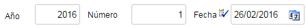
Usar
@ReferenceView para refinar la interfaz de referencias
Todavía necesitas refinar la forma en que la referencia
cliente
se visualiza, porque visualiza todos los miembros de
Cliente, y
para introducir los datos de una
Factura una vista más simple
del cliente puede ser mejor. Para hacer esto, has de definir una vista
Simple
en
Cliente, y entonces indicar en
Factura que quieres
usar esa vista
Simple de
Cliente para visualizarlo.
Primero definamos la vista
Simple en
Cliente:
@View(name="Simple", // Esta vista solo se usará cuando se especifique “Simple”
members="numero, nombre" // Muestra únicamente numero y nombre en la misma línea
)
public class Cliente {
Cuando una vista tiene un nombre,
como en este caso, esa vista solo se usa cuando ese nombre se especifica.
Es decir, aunque Cliente solo tiene esta anotación @View,
cuando tratas de visualizar un Cliente no usará esta vista Simple,
sino la generada por defecto. Si defines una @View sin nombre,
esa vista será la vista por defecto, aunque este no es el caso.
Ahora has de indicar que la referencia a Cliente desde Factura
use esta vista Simple. Esto se hace mediante @ReferenceView:
@ManyToOne(fetch=FetchType.LAZY, optional=false)
@ReferenceView("Simple") // La vista llamada 'Simple' se usará para visualizar esta referencia
private Cliente cliente;
Realmente sencillo, solo has de
indicar el nombre de la vista de la entidad referenciada que quieres usar.
Después de esto la referencia
cliente se mostrará de una forma
más compacta:
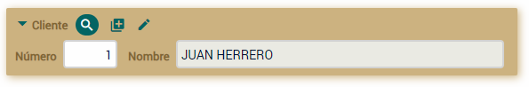
Hemos refinado un poco la interfaz de
Factura.
La interfaz de usuario
refinada
Este es el resultado de nuestros refinamientos en la interfaz de usuario
de
Factura:
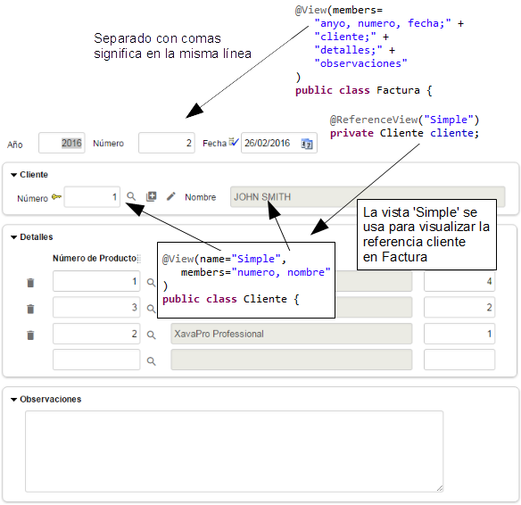
Has visto lo fácil que es usar
@View y
@ReferenceView
para obtener una interfaz de usuario más compacta para
Factura.
Ahora tienes una interfaz de usuario suficientemente buena para empezar a
trabajar, y realmente hemos hecho poco trabajo para conseguirlo.
Desarrollo
ágil
Hoy en día el desarrollo ágil ya no es una “una técnica nueva y
rompedora”, sino una forma establecida de hacer desarrollo de software, es
más, es la forma ideal de desarrollar software para muchos.
Si no estás familiarizado con el desarrollo ágil puedes echar un vistazo a
www.agilemanifesto.org.
Básicamente, el desarrollo ágil favorece el uso de retroalimentación
obtenida de un producto funcional sobre un diseño previo meticuloso. Esto
da más protagonismo a los programadores y usuarios, y minimiza la
importancia de los analistas y los arquitectos de software.
Este tipo de desarrollo necesita también un nuevo tipo de herramientas.
Porque necesitas una aplicación funcional rápidamente. Tiene que ser tan
rápido desarrollar la aplicación inicial como lo sería escribir la
descripción funcional. Además, necesitas responder a las peticiones y
opiniones del usuario rápidamente. El usuario necesita ver sus propuestas
funcionando en corto tiempo.
OpenXava es ideal para el desarrollo ágil no sólo porque permite un
desarrollo inicial muy rápido, sino porque también te permite hacer
cambios y ver su efecto instantáneamente. Veamos un pequeño ejemplo de
esto.
Por ejemplo, una vez que el usuario ve tu aplicación y empieza a jugar con
ella, se da cuenta que él trabaja con libros, música, programas y así por
el estilo. Todos estos productos tienen autor, y sería útil almacenar el
autor, así como ver los productos por autor.
Añadir esta nueva funcionalidad a tu aplicación es simple y rápido. Lo
primero es crear una nueva clase para
Autor con el siguiente
código:
package com.tuempresa.facturacion.modelo;
import javax.persistence.*;
import org.hibernate.annotations.GenericGenerator;
import org.openxava.annotations.*;
@Entity
public class Autor {
@Id @GeneratedValue(generator="system-uuid") @Hidden
@GenericGenerator(name="system-uuid", strategy = "uuid")
@Column(length=32)
private String oid;
@Column(length=50) @Required
private String nombre;
// RECUERDA GENERAR LOS GETTERS Y SETTERS PARA LOS CAMPOS
}
Ahora, añade este código a la ya
existente entidad Producto:
@ManyToOne(fetch=FetchType.LAZY)
@DescriptionsList
private Autor autor;
// RECUERDA GENERAR EL GETTER Y EL SETTER PARA autor
Así, tu entidad Producto
tiene una referencia a Autor. Recuerda generar el getter
y setter para autor.
Realmente has escrito una cantidad pequeña de código. Para ver el efecto,
solo necesitas construir tu proyecto (esto solo es pulsar Ctrl-B en tu
Eclipse), lo cual es inmediato. Después ve al navegador y recarga la
página con el módulo Producto, y ahí verás, un combo para
escoger el autor del producto, como muestra aquí:
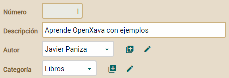
¿Qué ocurre si el usuario quiere escoger un autor y ver todos sus
productos? Está chupado. Solo has de hacer la relación entre Producto
y Autor bidireccional. Ve a la clase Autor y añade el
siguiente código:
@OneToMany(mappedBy="autor")
@ListProperties("numero, descripcion, precio")
private Collection<Producto> productos;
// RECUERDA GENERAR EL GETTER Y EL SETTER PARA productos
Para usar Collection has
de añadir el siguiente import:
Recuerda generar el getter y
setter para productos. Ahora pulsas Ctrl-B (para construir) y
refresca tu navegador con el módulo Autor. Escoge un autor y
verás sus productos. Tienes algo parecido a esto:
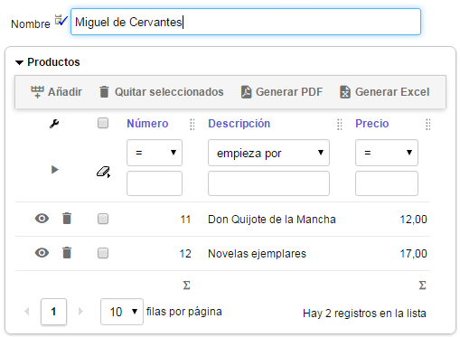
Sí, añades una nueva colección,
refrescas tu navegador y tienes una interfaz de usuario completa para
manejarla. En este caso el usuario puede pulsar en el botón Añadir
para escoger un libro de una lista de libros existentes o pulsar Nuevo
para introducir los datos para crear un nuevo libro que se añadirá a la
colección. Además cuando el autor se borre sus libros seguirán estando en
la base de datos. Puedes definir un comportamiento diferente con cascade
como REMOVE o ALL, así:
@OneToMany(mappedBy="autor", cascade=CascadeType.REMOVE) // NO LO AÑADAS A TU CÓDIGO
De esta forma sólo el botón
Nuevo
para crear nuevos libros está disponible, el botón
Añadir no está
presente. Además, cuando el autor se borre sus libros se borrarán también.
Para el caso autor/libros no queremos este comportamiento, pero puede ser
útil en muchos casos donde una
@ElementCollection sea
insuficiente.
Esta sección ha mostrado el código completo y los pasos para hacer cambios
y ver el resultado de una manera muy interactiva. Tus ojos han visto como
OpenXava es una herramienta ágil, ideal para hacer desarrollo ágil.
Resumen
Esta lección te ha enseñado como usar simples clases de Java para crear
una aplicación Web. Con solo escribir clases Java para definir tu dominio,
obtienes una aplicación lista para usar. También, has aprendido como
refinar la interfaz de usuario por defecto usando algunas anotaciones de
OpenXava. Si quieres conocer todas las posibilidades que ofrece OpenXava
para definir la interfaz de usuario
lee
la guía de referencia.
Efectivamente tienes una aplicación funcional con poco esfuerzo. Aunque
esta aplicación “tal cual” puede servir como utilidad de mantenimiento o
un prototipo, todavía necesitas añadir validaciones, lógica de negocio,
comportamiento de la interfaz de usuario, seguridad y así por el estilo
para convertir estas entidades que has escrito en una aplicación de
gestión lista para tus usuarios.
Aprenderás estos temas avanzados en las siguientes lecciones.
Descargar código fuente de esta lección
¿Problemas con la lección? Pregunta en el foro ¿Ha ido bien?
Ve a la lección 3